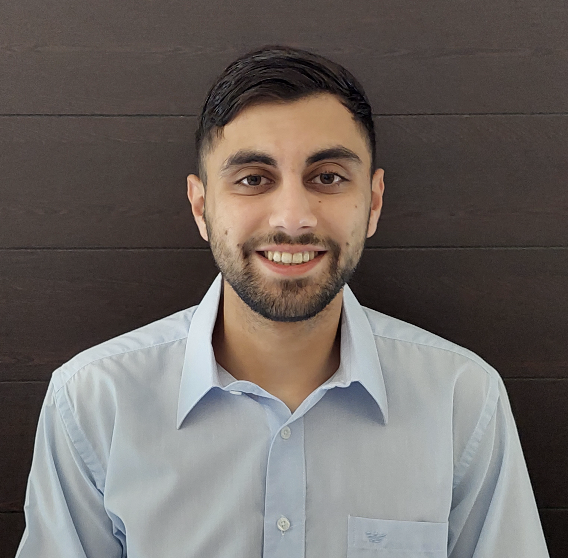

Christos Kitsios

Address:
Bunsenstrasse 3-5,
37073, Göttingen,
Germany
email:
christos[D0T]kitsios{at}mathematik{D0T}uni-goettingen[D0T]de
Doctoral Student in Mathematics at the University of Göttingen, working under the supervision of Dr. Federico Vigolo. Member of the Research Training Group 2491: "Fourier Analysis and Spectral Theory".
Research:
My research interests lie in the intersection of Coarse Geometry and Operator algebras. During my PhD project, I am interested in the K-theory of Roe algebras, which are C*-algebras associated with metric spaces and capture the large scale geometry of the space. More precisely, I am focused in the Roe algebra of Warped Cones, spaces which may be used to construct examples that violate the coarse Baum-Connes conjecture.
In addition, I am interested in the diagonal dimension of Cartan subalgebras in C*-algebras and their connection with coarse geometry.
Research interests:
- Coarse Geometry
- Nuclear and diagonal dimension of C*-algebras
- (non-commutative) Cartan subalgebras
- K-theory of operator algebras
- (coarse) Baum-Connes conjecture
- Warped cones
- Expander graphs
Conferences:
- Autumn School "T-duality via K-theory to Representation Theory" (Organiser), 30.09.-04.10.2024, University of Göttingen.
Conferences Attended:
- YMC*A (Lightning talk), 05.08.-09.08.2024, University of Glasgow,
- Arbre de Noël, 06.12.-10.12.2023, University of Metz,
- Autumn School on Large scale Geometry, 09.10.-13.10.2023,
University of Göttingen,
- YMC*A, 07.08.-11.08.2023, KU Leuven.
Education:
- PhD in Mathematics, 10.2022-present,
University of Göttingen,
- MSc in Applied Mathematics, 08.2020-07.2022,
Delft University of Technology,
- BSc in Mathematics, 10.2016-07.2020,
Aristotle University of Thessaloniki.
Experience:
- Internship at the Delft Center for Systems and Control
Contact:
Address:
Bunsenstraße 3-5,
37073 Göttingen,
Germany
email:
christos[D0T]kitsios{at}mathematik{D0T}uni-goettingen[D0T]de